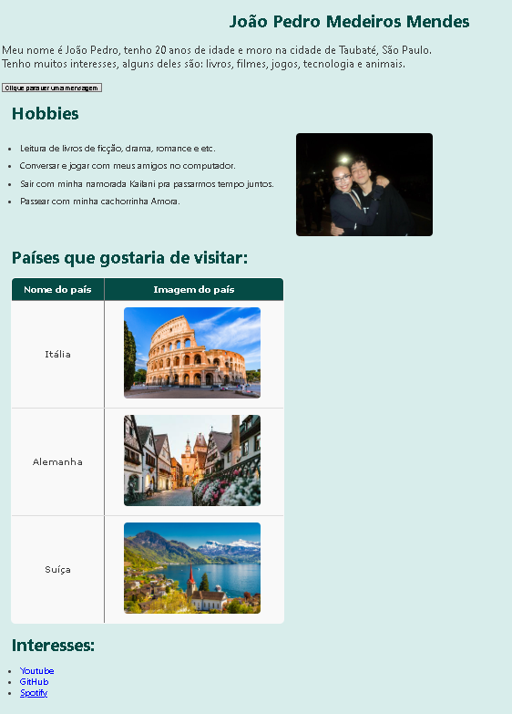

Durante meus estudos, desenvolvi alguns trabalhos. Um deles foi um projeto de Biografia, publicado no GitHub Pages:
➡ Clique aqui para ver meu projeto
Esse site de biografia foi desenvolvido como atividade da faculdade, utilizando HTML, CSS e JavaScript. O objetivo foi aplicar conceitos básicos de estruturação de páginas, estilização e interatividade.
